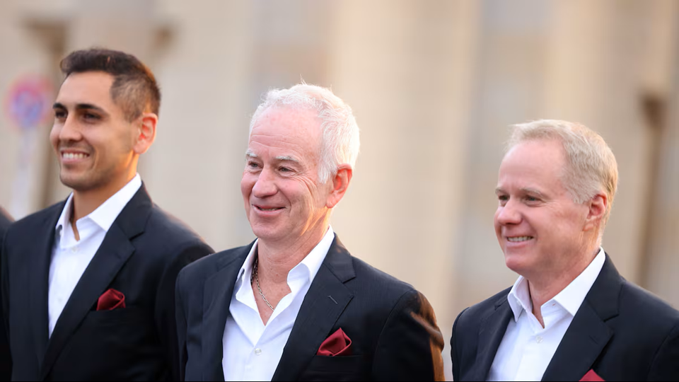

McEnroe lamenta la ausencia de Alcaraz: “El tenis pierde a una de sus grandes estrellas”
“Es una pérdida horrible para el tenis”. — John McEnroe sobre la baja de Carlos Alcaraz en Roland Garros.
Durante la previa de Roland Garros 2026, John y Patrick McEnroe mostraron su preocupación por la ausencia de Carlos Alcaraz debido a una lesión en la muñeca. Ambos coincidieron en que el torneo pierde atractivo sin el español, ya que consideran que es uno de los jugadores más espectaculares y carismáticos del circuito actual. Además, señalaron que su baja deja a Jannik Sinner como máximo favorito para conquistar el torneo.
Los McEnroe también aprovecharon para hablar del futuro del tenis y destacaron a jóvenes talentos como Rafa Jódar, Arthur Fils y Learner Tien como posibles revelaciones. Finalmente, reflexionaron sobre cómo figuras como Alcaraz o Federer ayudan a conectar el deporte con el público gracias a su estilo y personalidad dentro de la pista.